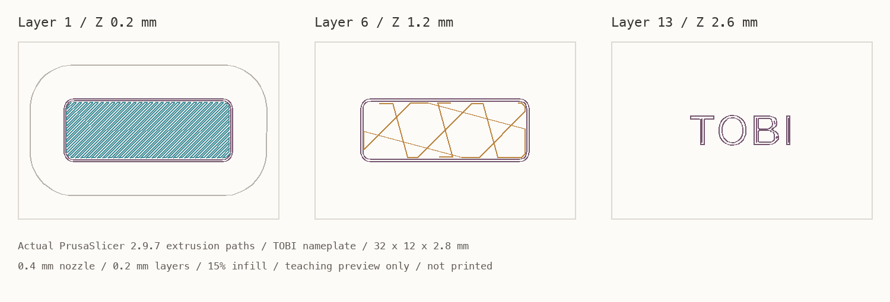

7. 打印与装配头盔
屏幕是否对齐、USB 插头能否插到底、隔着头盔能否触发 TTP223，都要用自己的器件试装。先打印上一章设计的局部试片。它只包含需要检验的一小段结构，调整后可以很快再试一次。
在切片器中检查打印路径
切片器把 STL 转换成打印机逐层执行的运动指令。生成的 G-code 包含温度、速度和坐标，与打印机及材料有关。向实验室确认打印机型号、喷嘴直径、耗材、可打印尺寸和文件提交方式，再选择匹配的配置。交给他人切片时，一起提供 STL、设计源文件和模型单位（毫米）。
- 导入内支架的局部试片，对照设计尺寸，确认底面贴在平台上。做方形外壳的同学可用配套的窗口与导槽试片。
- 切到逐层预览，沿窗口和导槽查看每一层的路径。设计里有薄壁、预览中却没有走线，打印出来这里就会缺一块。
- 检查悬空部分是否需要支撑，打印后能否取出支撑。对照平台尺寸、预计耗时和材料用量，再提交打印。

图中是 PrusaSlicer 按 0.2 mm 层高切出的名牌。第 1 和第 6 层都在底牌内，第 13 层已经到了凸起的字。其他打印机和材料应使用实验室给出的层高与温度。
用试片确定配合尺寸
清理毛刺后，把屏幕的 PCB 放入试片。如果窗口在左右两侧各遮住 0.3 mm 显示区，记录遮挡方向和数值。在保持窗口中心不变的条件下，可以把窗口总宽增加 0.6 mm，重新导出并打印同一段试片。
检查支架的受力位置。两边应托住电路板的空白板边，让屏幕玻璃、背面元件和接线都有余量。若使用金属紧固件，要调整绝缘支撑，避免紧固件碰到焊点。将通过试装的尺寸写回设计文件。
将三个模块装入头盔
- 在壳外测试。 上电后确认屏幕能显示两只完整的眼睛，触摸能切换表情。拔下 USB 线，再开始试装。
- 将 OLED 对准面窗。 用试合过的支架托住 PCB，从正面检查显示区的四条边是否完整露出。留出排针和导线的位置。
- 定位 TTP223 和 ESP32-C3。 让感应电极朝向头顶预定的触摸位置。把开发板放在底部，用未接电源的 USB 线试插，确认插头能插到底，板子不会被推走。
- 接线、合壳。 按接线图连接三个模块，给需要拆卸的底板留出线长。先试合头壳，确认没有夹线，再固定部件、接上电源。头盔与器件的位置示意
方形外壳的装配顺序
把 OLED 和 TTP223 滑入上盖背面的导槽，把开发板从底壳后侧滑向 USB 开口。试插后拔下插头，接好线，给上盖留出掀开的余量，再拧紧四角螺丝。查看装配图
合壳后复测
| 项目 | 操作和记录 |
|---|---|
| 上电 | 拔插 USB 数次，记录屏幕能否每次正常启动。 |
| 触摸 | 隔着头盔做单击和双击，检查是否漏触发或误触发。使用学习提醒的版本再试一次长按和取消。 |
| 显示 | 检查普通眼睛、笑眼和泪滴的边缘是否被挡住。有学习提醒时，再看倒计时数字和提示文字。 |
| 接口 | 插拔 USB 后查看开发板、固定点和导线是否位移。 |
| 连续使用 | 完整跑过一次预定使用过程，记录时长、异常现象和重启次数。 |
例如，在壳外能识别双击、装好后经常漏掉第二下，可以先保持接线和固件不变，只调整电极与头盔内壁的距离，重复同一组触摸。保存这次试装照片、打印参数和检查结果，便于别人按相同条件复测。